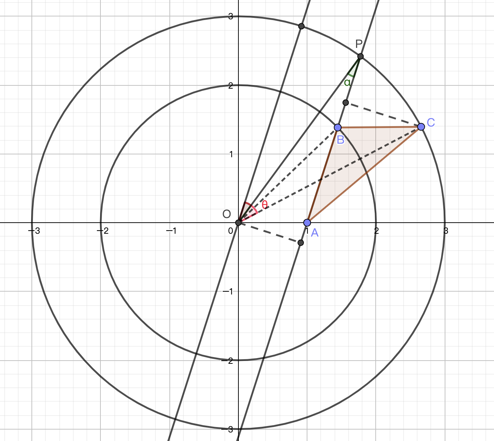

2020牛客暑期多校训练营（第二场）
收获
- 一定要注意 corner cases
- $40000$ 的数据量考虑一下
bitset - 平面图最小割 $\implies$ 对偶图最短路
- 区间 $[L,R]$ 及其移动可以尝试看成点 $(L,R)$ 及其移动
A All with Pairs
把所有后缀的 $\text{hash}$ 值都存下来，枚举每一个字符串的前缀，设 $cnt_i$ 表示与 $s[1…i]$ 相同的后缀数量。但是我们发现同一个串可能会给不同的 $cnt_i$ 有贡献，例如给出两个 $aba$，那么考虑其中一个 $aba$ 时，另一个 $aba$ 的后缀 $a$ 会给 $cnt_1$ 贡献，后缀 $aba$ 会给 $cnt_3$ 贡献，我们只想要保留对 $i$ 最大的 $cnt_i$ 的贡献。假设一个字符串对 $cnt_i,cnt_j$ 均有贡献，其中 $j<i$，这意味着长度为 $j$ 的后缀是长度为 $i$ 的后缀的公共前后缀。联想到 $\textbf{KMP}$ 算法的 $\text{next}$ 数组，只需要 $cnt_{\text{next[i]}}-=cnt_i$ 即可消除重复贡献的情况。
1 |
|
B Boundary
比赛时因为没考虑 corner cases 而贡献了 7 发罚时，吸取了惨烈的教训。
枚举点，与原点构成一条弦，根据圆周角定理，和这两个点在同一个圆上的所有点的圆周点相同或互补，于是我们可以把其他点的圆周角算出来（右侧的角用 $\pi$ 减掉，相当于把点全放到左侧去），统计相同角的个数即可。
一定注意 $n=1$ 以及 $n=2$ 但是共线等 corner cases！
复杂度：$O(n^2\lg n)$
1 |
|
C Cover the Tree
链的形式显然是从一个叶子到另一个叶子，所以答案至少是 $\left\lceil\frac{s}{2}\right\rceil$.
解法看上去很神奇：选取一个非叶子节点作为根进行 $dfs$，得到叶子节点的 $dfs$ 序，连接第 $i$ 和第 $\frac{s}{2}+i$ 个叶子节点即可（$i\leq\frac{s}{2}$）。
这是可以证明的：假设这条边“覆盖”着 $[l,r]$ 的叶子，如果 $l>\frac{s}{2}$，那么它一定被 $l-\frac{s}{2}\to l$ 的链覆盖；如果 $r\leq\frac{s}{2}$，那么它一定被 $r\to r+\frac{s}{2}$ 覆盖；否则，它一定被 $1\to1+\frac{s}{2}$ 或者 $\frac{s}{2}\to s$ 覆盖。
1 |
|
D Duration
签到题，把两个时间换算成秒，相减取绝对值即可。
1 |
|
F Fake Maxpooling
注意 $k$ 是固定的，一个 $k\times k$ 子矩阵在平移的时候可以用单调队列搞定。预处理的时候也用单调队列。
另外，直接算 $A$ 数组是 $O(nm\lg n)$ 的，实测用递归 $\gcd$ 会 $\text{TLE}$，循环 $\gcd$ 可过。不过用下面这种方式计算 $A$ 数组是 $O(nm)$ 的（出题人的方式）：
1 | for(int i = 1; i <= n; i++) |
其实就是记忆化。
复杂度：$O(nm)$
1 |
|
G Greater and Greater
$40000$ 的数据量要联想到 bitset。
首先对每个 $A_i$ 求一个长度为 $m$ 的 bitset $S_i$，其中 $S_i[j]$ 表示 $A_i$ 能否干掉 $B_j$。例如：样例中 $A=\{1,4,2,8,5,7\},\,B=\{2,3,3\}$，以 $A_3=2$ 为例，它的 $S_3=100$，因为 $2$ 可以干掉 $B_1$，但不能干掉 $B_2,B_3$。
为了计算所有的 $S_i$，注意到，如果把 $A$ 数组排序，那么后一个数字的 bitset 是在前一个数字的 bitset 的基础上，把某些 $0$ 改成 $1$ 得到的，因此，$S_i$ 最多有 $m$ 种。我在代码中把具有相同的 bitset 的 $A_i$ 都映射到同一个 bitset 上，这样保证时间复杂度和空间复杂度都是 $O\left(\frac{m^2}{32}\right)$. （否则会爆空间）
随后设 $n$ 个长度为 $m$ 的 bitset $cur_i$，其中 $cur_i[j]$ 表示从 $A_i$ 开始的连续 $m-j+1$ 个数能否干掉 $B$ 的后 $m-j+1$ 个数（为什么是 $m-j+1$ 这个奇怪的数字，其实是为了后面的式子简便）。仍以样例为例：$cur_2=001$，因为 $\{4,2,8\}$ 不能干掉 $\{2,3,3\}$，$\{4,2\}$ 不能干掉 $\{3,3\}$，$\{4\}$ 可以干掉 $\{3\}$；同理，$cur_3=100$ 等等。
为了计算 $cur_i$，我们寻找递推式。以 $cur_2$ 为例，$cur_2[1]$ 可以看作是比较 $\{2,8\}$ 和 $\{3,3\}$ 后再比较 $\{4\}$ 和 $\{2\}$，也即是 $cur_2[1]=cur_3[2]\text{ & }S_2[1]$；$cur_2[2]$ 可以看作是比较 $\{2\}$ 和 $\{3\}$ 后比较 $\{4\}$ 和 $\{2\}$，也即是 $cur_2[2]=cur_3[3]\text{ & }S_2[2]$；$cur_2[3]$ 可以看作是比较 $\{4\}$ 和 $\{2\}$，为了统一递推式，不妨设 $cur_3[4]=1$，那么就有 $cur_2[3]=cur_3[4]\text{ & }S_2[3]$。综上，我们可以归纳出 $cur_i$ 的递推式：$cur_i=((cur_{i+1}\text{>>}1)\text{ & }S_i)\text{ | }I_{m+1}$，其中 $I_{m+1}$ 表示仅第 $m+1$ 位置 $1$ 的 bitset。
答案就是统计有多少个 $cur_i$ 的 $cur_i[1]=1$。
1 |
|
H Happy Triangle
对于一个询问，分类讨论：
- 若 $x$ 是最大边，则寻找 $x$ 的前驱 $p$（非严格）和它的前驱的前驱 $pp$（非严格），若 $p+pp>x$，那么可形成三角形；
- 若 $x$ 是中间边，则寻找 $x$ 的前驱 $p$ （非严格）和它的后继 $q$（非严格），若 $p+x>q$，那么可形成三角形；
- 若 $x$ 是最小边，则为了形成三角形，我们需要找到 $b>a>x$ 且 $b-a<x$ 的一对数 $a,b$，即需要在大于 $x$ 的数值中找到相邻的最小差值 $d$，如果 $d<x$，那么可以形成三角形。
为了完成上述操作，我是离线之后上值域线段树，值域线段树叶子节点内存储该数与其非严格前驱的差值，非叶子节点维护子树的最小差值。
值得注意的一点是，这里的差值是非严格前驱，所以在添加或删除一个数之后，要数一数还剩多少个数，然后分类讨论修改这个差值。
附：值域线段树找严格前驱和后继的代码：
1 | LL getPre(int id, int pos){ |
1 |
|
I Interval
把区间 $[l,r]$ 看成直角坐标下的点 $(l,r)$，则原题转化成了网格图的最小割问题，等价于最大流问题。
然而这个图的大小显然不适合跑网络流，但是受到“狼抓兔子”的启发，我们可以把平面图的最小割问题转化为其对偶图的最短路问题，于是 $\textbf{dijkstra}$ 搞定。
1 |
|
J Just Shuffle
比赛时思路方向是对的，后续没想出来，有所收获。
我们可以根据 $A$ 数组将原排列拆成一个个环，而我们只需要在每个环上转动 $1$ 次就行了。设第 $i$ 个环大小为 $r_i$，我们想要寻找的 $P$ 排列是按照上述规则转动 $x_i$ 次后的一个映射，即按照 $P$ 转 $1$ 次等价于转 $x_i$ 次。那么按照 $P$ 转 $k$ 次等价于转了 $kx_i$ 次，我们希望 $kx_i\bmod r_i=1$，即 $kx_i\equiv1\pmod {r_i}$，也即 $x_i\equiv k^{-1}\pmod {r_i}$，所以求求逆元，那么 $P$ 映射就是 $A$ 映射转 $x_i$ 次的结果，这道题就搞定了。
1 |
|
K Keyboard Free

固定 $A$ 点后，答案不变。现在让 $B$ 点和 $C$ 点在圆上运动。
假设 $B$ 点固定住，此时可知如图所示的角 $\alpha$ 和 $O$ 到直线 $AB$ 的距离 $h$，那么 $C$ 到直线 $AB$ 的期望距离为：
于是。三角形期望面积为：
取 $1000$ 个 $B$ 即可。
1 |
|
2020牛客暑期多校训练营（第二场）
http://xyfjason.github.io/blog-xcpc/2020/07/15/2020牛客暑期多校训练营（第二场）/